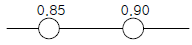
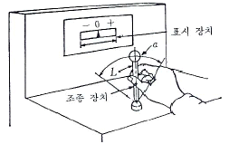
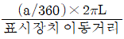
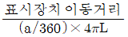
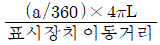
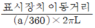
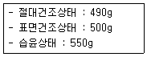
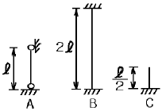
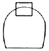

1과목: 산업안전관리론
1. Edword Adams의 이론은 Bird's 이론에 어떤 개념을 도입하였는가?
2. 무재해 운동을 추진하기 위한 세 가지의 기둥에 해당되지 않는 것은?
3. Herzberg가 말한 동기요인에 해당하는 것은?
4. 다음 중 맥그리거(Mcgregor)의 인간해석 중 Y이론의 관리처방은?
5. 다음 안전관리 조직 중 가장 이상적인 조직 형태는?
6. 다음 설명 중 옳은 것은?
7. 안전교육의 기본과정을 옳게 나열한 것은?
8. 교육 4단계 중 적용에 해당되는 설명은?
9. 리더십을 결정하는 요인으로서 관계가 먼 것은?
10. 일반적으로 교육이란 "인간행동의 계획적 변화"로 정의할 수 있다. 여기서 인간의 행동이 의미하는 것은?
11. 다음 중 행동의 변화가 가장 어려운 경우는?
12. 기업 내 정형교육 가운데 TWI의 교육내용에 해당하지않는 것은?
13. 1000명의 근로자가 상시 근무하는 A 기업에서 질병⋅그 밖에 사유로 인하여 5%의 결근율을 나타내고 있다. 이 회사에서 연간 60건의 재해가 발생하였다면 이 기업체의 도수율은? (단, 근로자가 1주일에 48시간, 연간 50주를 근로함)
14. 안전표지의 종류 중에 직접 위험한 것 및 장소 또는 상태에 대한 것을 표시하는데 사용되는 것은?
15. 평균 근로자 수가 1500명인 어떤 사업장의 도수율이 12.5 이고 강도율이 8.5 이었을 때 이 사업장의 근로손실일수는 얼마인가? (단, 연간 1인 근로시간수는 2400시간이다.)
16. 하버드대학에서 개발된 교육기법으로 고도의 판단력을 양성할 수 있는 특색을 갖는 것은?
17. 산업재해발생의 심리학적 요소에 해당되지 않는 것은?
18. 사고의 본질적 특성을 설명한 것 중 잘못 설명된 것은?
19. 『지적⋅확인』이 불안전 행동 방지에 효과가 있는 이유로 맞지 않는 것은?
20. 학습 방법 가운데 분습법의 장점에 해당되지 않는 것은?
2과목: 인간공학 및 시스템안전공학
21. 다음 중 감시체계를 보다 효과적으로 설계하기 위한 지침으로 틀린 것은?
22. 어떤 장치의 이상을 알려주는 경보기가 있어서 그것이 울리면 일정시간 이내에 장치를 정지하고 상태를 점검하여 필요한 조치를 하게 된다. 그런데 담당 작업자가 정지조작을 잘못하여 장치에 고장이 발생하였다. 이때 작업자가 조작을 잘못한 실수를 무엇이라고 하는가?
23. 시스템의 구상단계에서 이루어진 결정 사항에 따라서 정해진 최적 시스템에 대하여 발생될 수 있을 것으로 생각되는 사고를 광범위하게 최초로 정의하는 위험 분석은?
24. 시스템 안전분석에 이용되는 FMEA의 기법 중 장점에 해당되는 것은?
25. 기계설비의 본질 안전화를 진전시키기 위하여 검토하여야 할 사항은?
26. 4m 거리에서 조도가 60lux이라면 2m에서는 조도가 얼마인가?
27. 시스템 안전 달성을 위한 시스템 안전 설계 단계 중 위험상태의 최소화 단계에 해당하는 것은?
28. 다음 중 크기를 이용한 조종장치의 크기차이를 정확히 구별할 수 있는 직경과 두께에 해당하는 것은?
29. 높은 소음으로 생긴 생리적 변화가 아닌 것은?
30. 어느 부품 15000개를 1만시간 가동중에 15개의 불량품이 발생하였다. 평균 고장시간(MTBF)은?
31. 다음 중 Fail-safe의 원리가 아닌 것은?
32. 작업대가 부적절하게 높은 경우 취해지는 자세와 거리가 먼 것은?
33. 다음 시스템의 신뢰도는?(단, 두 부품의 고장은 독립이라고 가정한다.)

34. 인간의 과오를 평가하기 위한 정량적 해석방법은?
35. 그림에 있는 조종구(ball control)와 같이 상당한 회전운동을 하는 조종장치가 선형표시장치를 움직일 때는 L을 반경(지레의 길이), a를 조정장치가 움직인 각도라 할 때 조종표시 장치의 이동비율(control display ratio)을 나타낸 것은?





36. 표시장치의 신호체계 설계의 지침 중 부호의 양립성(compatibility)을 설명한 것 중 올바른 것은?
37. 작업을 하는 자세는 작업의 종류에 따라 다르다. 작업의 자세를 결정하는 조건으로 맞지 않는 것은?
38. 다음 중 신뢰도 구조상으로 직렬인 것은?
39. 정적자세를 유지 할 때의 진전(tremor)을 감소시킬 수 있는 방법과 거리가 먼 것은?
40. 화학 설비의 안전성 평가 5단계 중 제4단계인 안전대책은 정량적 평가결과 나타난 위험등급에 따라 대책을 수립해야 하는데, 어떠한 대책을 수립해야 하는가?
3과목: 건설시공학
41. 지반조사 방법 중 ＋자형의 저항날개를 로드선단에 붙여 지중에 박아 넣고 회전시켜 그 때의 최대저항치에서 지반의 전단강도를 구하는 방법은 어느 것인가?
42. 내외관을 소정의 깊이까지 박은 후에 내관을 빼낸 후, 외관에 콘크리트를 부어 넣어 지중에 콘크리트 말뚝을 형성시키는 파일(Pile)의 명칭은?
43. 흙막이 벽에 미치는 간극수압의 영향을 계측할 수 있는 장비로 적당한 것은?
44. 다음 중 토공기계와 그 용도가 서로 틀리게 연결된 것은?
45. 시멘트에 관한 설명 중 올바르지 못한 것은?
46. 철골공작 용어에서 스패터(spatter)의 설명으로 옳은 것은?
47. 직경 16mm인 철근의 일반적인 압축측 이음길이는?
48. 콘크리트에 관한 기술 중 옳지 않은 것은?
49. 건설공사 원가 구성체계에 관한 설명 중 직접공사비에 포함되지 않는 것은?
50. 기초지반의 성질을 적극적으로 개량하기 위한 지반개량 공법으로서 거리가 먼 것은?
51. 연약한 지반을 굴착할 때 기초저면 부분이 부풀어 오르고 흙막이 지보공을 파괴시켜 붕괴하는 현상은?
52. 철근콘크리트공사에서 거푸집 조립시 측압력은 부담하지 않고 거푸집판의 간격이 좁아지지 않게 사용하는 긴결재를 무엇이라 하는가?
53. 프로젝트의 자금조달과 설계 및 엔지니어링, 시공의 전부를 도급 받아 시설물을 완성한 후 일정기간의 운영으로 투자자금을 회수한 후 발주자에게 양도하는 공사계약제도 방식은?
54. 네트워크 공정표에 관한 설명으로 옳지 않은 것은?
55. 다음 내용 중 건축시공적 기술활동에 해당되는 것은?
56. 다음의 용어 중 불량용접을 뜻하는 용어가 아닌 것은?
57. 콘크리트 강도에 가장 큰 영향을 미치는 배합요소는 어느 것인가?
58. 철골 내화피복공사 중 멤브레인공법에 사용되는 재료는?
59. 내부(봉형)진동기의 사용법상 주의사항으로 옳은 것은?
60. 레디믹스트 콘크리트 중 믹싱플랜트에서 어느 정도 비빈 것을 트럭믹서에 실어 운반도중 완전히 비벼 만드는 것은?
4과목: 건설재료학
61. 알루미늄에 관한 기술 중 옳지 않은 것은?
62. 타일에 대한 설명 중 부적당한 것은?
63. 콘크리트용 골재에 요구되는 성질 중 옳지 않은 것은?
64. 목재의 강도에 영향을 주는 요소와 가장 거리가 먼 것은?
65. 목재의 성질에 관한 내용 중 알맞지 않은 것은?
66. 열가소성수지에 속하는 재료는?
67. 골재의 함수상태에 따른 중량이 다음과 같을 경우 흡수율은?

68. 콘크리트 강도의 변화를 가장 적게하고 시공연도를 조절하려면 어떤 방법으로 해야 하는가?
69. 강도, 경도, 비중이 크고, 내화력도 우수하여 구조용 석재로 널리 쓰이지만, 조직 및 색조가 균일하지 않고 석리가있어 채석 및 가공이 용이하지만 대재를 얻기 어려운 것은?
70. 천연 아스팔트가 아닌 것은?
71. 벽, 기둥 등의 모서리에 대어 미장바름을 보호하는 철물은?
72. 콘크리트의 재료 분리에 관한 설명 중 부적당한 것은?
73. 보통목재의 인화점(引火点)은 대략 몇 도인가?
74. 다음 중 ALC에 관한 설명으로 틀린 것은?
75. 특수모르타르의 일종으로서 광택 및 특수 치장용으로 사용되는 것은?
76. 점토의 성질에 대한 설명 중 틀린 것은?
77. 화강암에 관한 설명 중 잘못된 것은?
78. 다음 에폭시 수지에 관한 기술 중 옳지 않은 것은?
79. 고온소성의 무수석고를 특별히 화학처리한 것으로 킨스시멘트라고 불리우는 것은?
80. 구리(銅)에 대한 설명 중 옳지 않은 것은?
5과목: 건설안전기술
81. 일반적으로 사면이 가장 위험한 경우는 어느 때인가?
82. 롤러의 표면에 돌기를 만들어 부착한 것으로 돌기가 전압층에 매입되어 풍화암을 파쇄하고 흙속의 간극수압을 제거하는 롤러는?
83. 근로자의 추락재해방지를 위하여 작업발판을 설치하기 곤란한 때에 안전대를 착용하도록 하는 등의 조치가 필요한 높이는?
84. 달비계의 최대적재하중을 정하기 위한 안전계수 중 맞는 것은?
85. 입경이 가늘고 비교적 균일하면서 느슨하게 쌓여 있는 모래 지반이 물로 포화되어 있을 때 지진이나 충격을 받으면 일시적으로 전단강도를 잃어버리는 현상은?
86. 부두 또는 안벽의 선을 따라 통로를 설치할 경우 폭은 얼마 이상으로 하여야 하는가?
87. 기초공사를 위하여 굴착작업을 계획하고 있다. 현장의 토사는 시험굴착해보니 보통흙 습지였다. 이때 적용할 수 있는 굴착면의 기울기 기준은?
88. 다음 중 수중굴착 작업 시 가장 적합한 공법은?
89. 철골공사 등의 용접작업시 사용되는 가스용기의 취급상 주의사항으로서 잘못된 것은?
90. 흙의 간극비의 정의로 가장 알맞은 것은?
91. 건설공사 현장 가설통로 설치기준으로 맞는 것은?
92. 철근 콘크리트 공사에서 거푸집의 존치기간에 대한 설명 중 옳은 것은?
93. 항타기 또는 항발기의 권상용 와이어로프의 사용금지 사항에 대한 설명으로 틀린 것은?
94. 쇼벨계 굴착기계에 속하지 않는 것은?
95. 그림과 같이 양단의 지지 조건이 다른 기둥들에 대하여 좌굴에 대한 유효길이는?

96. "바닥으로부터 짐 윗면까지의 높이가 ( )m 이상인 화물자동차에 짐을 싣는 작업 또는 내리는 작업을 하는 때에는 추락에 의한 근로자의 위험을 방지하기 위해 안전 하게 상승 또는 하강하기 위한 설비를 설치하여야 한다." ( )안에 적합한 것은?
97. 개착식 굴착공사(Open cut)에서 설치하는 계측기기와 거리가 먼 것은?
98. 강관비계의 종류에 따른 조립간격에 대한 설명으로 틀린 것은? (단, 틀비계는 높이가 5m미만의 것을 제외한다.)
99. 다음 그림과 같이 굴착하는 도갱은?

100. 비계를 변경한 후 작업 전 비계의 점검사항으로 적당하지 않은 것은?